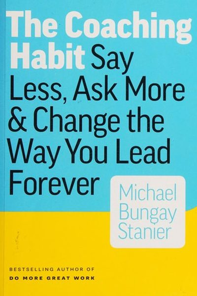

Library › Business & Startups
The Coaching Habit — Summary & Key Lessons

Say less, ask more & change the way you lead forever — seven questions that coach any team.
📖 OPEN THE FULL INTERACTIVE BREAKDOWN →🌐 Read it in Hindi, Hinglish, Gujarati, Tamil & 22 more languages — free, with audio.
💡 The Big Idea
Michael Bungay Stanier's insight: leaders fall into the 'advice monster' — giving answers, fixing problems, creating dependence. The cure is seven questions that turn any conversation into coaching: the Kickstart ('What's on your mind?'), the AWE question ('And what else?'), the Focus ('What's the real challenge here for you?'), the Foundation ('What do you want?'), the Lazy ('How can I help?'), the Strategic ('If you're saying no, what are you saying yes to?'), and the Learning ('What was most useful for you?'). Ask more, tell less, and people grow.
🧠 The 7 Key Lessons
Lesson 1: Tame the Advice Monster
The Advice Monster
Leaders are trained to give answers — tell, fix, rescue. But every answer you give trains your team to depend on you. The advice monster is driven by three voices: tell-it, save-it, control-it. Taming it means staying curious and asking instead of advising.
📖 Example: When a team member brings a problem, the leader's instinct is 'here's what to do'. The coaching response — 'what do you think?' — builds capability instead of dependency. Read the full example →
⚡ Do this: Catch yourself giving an answer before understanding the question. Convert it: 'What do you think?'
Lesson 2: The Kickstart: 'What's on your mind?'
The Kickstart Question
Every coaching conversation starts with 'What's on your mind?' — it surfaces what actually matters to the other person, not what the agenda says. The question respects that the real issue may differ from the scheduled topic. Start with the person, not the plan.
📖 Example: A weekly 1:1 that opens with 'What's on your mind?' quickly surfaces the real project crisis, instead of spending 30 minutes on the agenda nobody cared about. Read the full example →
⚡ Do this: Open your next 1:1 or team conversation with 'What's on your mind?' and genuinely listen.
Lesson 3: The AWE Question: 'And what else?'
The AWE Question
'And what else?' is the highest-leverage question in coaching: it forces the person past their first answer — which is rarely the real one. Asking it repeatedly (two or three times) uncovers deeper issues, better ideas and hidden concerns. It also stops you from jumping in with solutions.
📖 Example: An employee says 'I need more time'. 'And what else?' reveals: 'I don't trust the process.' The second answer is the real problem — and the first was just the surface. Read the full example →
⚡ Do this: After someone's first answer, ask 'And what else?' at least twice before you respond with anything.
Lesson 4: The Focus Question: 'What's the real challenge here?'
The Focus Question
People often present the surface problem when the real challenge is different — and it's usually a personal one ('for you'). The focus question cuts through: 'What's the real challenge here for you?' It gets to the part the person owns, where change is actually possible.
📖 Example: A team says 'our tools are outdated'. The real challenge for the manager might be 'I don't know how to argue for budget'. The focus question shifts the conversation to what she can act on. Read the full example →
⚡ Do this: When someone presents a problem, ask: 'What's the real challenge here for you?' and wait for the second, deeper answer.
Lesson 5: The Lazy Question: 'How can I help?'
The Lazy Question
'How can I help?' — the lazy question — is actually the efficient one: it stops you from guessing what the person needs and doing the wrong thing. You're not lazy for asking; you're lazy for guessing. The question also surfaces when the other person doesn't need your help at all.
📖 Example: The employee who wants a sounding board, not a solution: 'How can I help?' reveals 'just listen' — saving you from delivering an unwanted lecture. Read the full example →
⚡ Do this: Before jumping in to help, ask: 'How can I help?' — and honor the actual answer, even if it's 'just listen'.
Lesson 6: The Strategic Question: 'What are you saying yes to?'
The Strategic Question
Every 'no' is a 'yes' to something else — and every 'yes' is a 'no' to something else. The strategic question makes the trade-off visible: 'If you're saying no to this, what are you saying yes to?' It forces prioritization and reveals what the person actually values.
📖 Example: The client who keeps saying no to new work: 'what are you saying yes to?' reveals the answer — 'my family time' — and the leader stops pushing and starts respecting. Read the full example →
⚡ Do this: Before accepting or rejecting anything, name the trade-off: what are you saying yes to by saying no to this?
Lesson 7: The Learning Question: 'What was most useful?'
The Learning Question
End conversations with 'What was most useful for you?' — it locks in the learning, gives you feedback on your coaching, and turns the conversation into growth. The question is small but transforms meetings from events into lessons.
📖 Example: After a coaching session, the question helps the person articulate what they'll actually take away — and tells you what worked in your approach. Read the full example →
⚡ Do this: End your next three conversations with 'What was most useful for you?' — and notice what it changes.
✅ 5-Step Action Plan
- Catch the advice monster — ask instead of tell.
- Open with 'What's on your mind?' in your next 1:1.
- Ask 'And what else?' twice before responding.
- Find the real challenge with the focus question.
- Ask 'How can I help?', name your yes/no trade-offs, and close with 'What was most useful?'
💬 Best Quotes from The Coaching Habit
- “The advice monster is the leader's default — and it kills learning.”
- “'And what else?' is the best coaching question in the world.”
- “Asking questions creates a moment of choice — it's the difference between training and coaching.”
Interactive version: mark lessons as read, listen in your language, share quote cards.